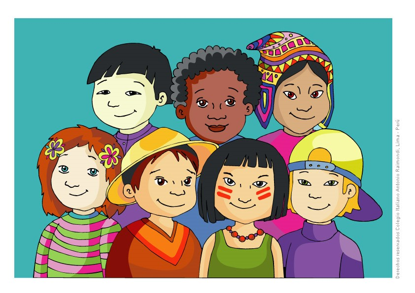
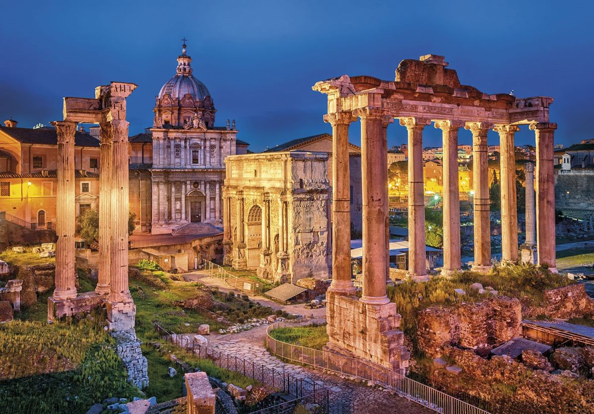

 Europa es uno de los continentes que conforman lo que se llama el supercontinente Euroasiático o Eurasia
(formado por Europa y Asia unidas). Entre el 6 % y el 8 % del área terrestre está ubicado en este continente. Sin embargo es el 2º continente más pequeño en cuanto a tamaño. El continente europeo posee una gran variedad de idiomas
(más de 50) entre los que se puede destacar el ruso, inglés, francés, alemán, español y portugués. En él habitan entre 739 y 743 millones de habitantes. Europa se divide en 56 estados soberanos. Sin embargo no todos tienen reconocimiento
internacional. A su vez, se puede dividir en Europa oriental y Europa occidental. El más grande de los países de Europa es Rusia y la ciudad (nación independiente) más pequeña es la ciudad del Vaticano. La historia de Europa se remonta
a la Edad media en el año 476 después de Cristo con la caída del imperio romano, puesto que a partir de allí existieron diferentes formas de alianzas para que cada región o país uniera sus poderes con otros. Así, una de las guerras que
duró mayor cantidad de tiempo fue “la guerra de los 100 años”, que tuvo lugar durante la Edad media y que, tal como su nombre lo indica, duró más de un siglo. Con la Edad moderna, las guerras e intentos de unión no cesaron. Así tuvo lugar
una guerra llamada “la guerra de los 30 años”. Desde el punto de vista histórico, Europa es el continente que mayor ha incidido en la historia de otros países y continentes. Así fue partícipe de descubrimientos (como el descubrimiento de
América), conquistas (como la conquista de América), guerras, invasiones, revoluciones, etc (en numerosas oportunidades y hacia diferentes destinos). Europa se encuentra bien delimitada en el mar del norte (Mar Glacial Ártico), oeste
(Océano Atlántico) y sur (Mar Mediterráneo). Sin embargo al este del continente, la división entre Asia y Europa, no se encuentra del todo clara. No obstante se cree que el límite está marcado por los montes Urales (junto al río Ural),
las montañas del Cáucaso, el Mar Caspio y Mar Negro. De este modo, tanto Turquía, Kazajistán, Georgia, Rusia y Azerbaiyán se encontrarían en el límite de ambos continentes.
| DESCRIPCIÓN | La cultura popular estadounidense se ha expresado a través de todos los medios de comunicación y de señales, incluyendo las películas, la televisión, la música, el cómic y los deportes. Lo que el viento se llevó y La guerra de las galaxias, Mickey Mouse y Marilyn Monroe, Barrio Sésamo, Bob Esponja y Los Simpson, Elvis Presley, Michael Jackson, Madonna y Britney Spears, el jazz, el blues, y el hip hop, Popeye, Snoopy y Superman, el béisbol, el fútbol americano y el basketball, Barbie y G.I. Joe, hamburguesa y Coca Cola, etc. —estos nombres, géneros y frases se relacionan con productos estadounidenses que han sido expandidos en todo el mundo. Es importante notar que Estados Unidos tiende a ser exportador de cultura, y además absorbe otras tradiciones culturales con relativa facilidad, tales como el fútbol, la pizza y el yoga. Esto marca un contraste muy grande con los primeros días de los Estados Unidos. Las ciudades del país ofrecen música clásica y popular, centros de investigación histórica y científica, museos, musicales y obras teatrales, además de proyectos artísticos y obras arquitectónicas de nivel internacional. Este desarrollo es el resultado de las contribuciones de filántropos particulares, como del gobierno. |
|---|---|
| COSTUMBRES | Vacaciones de Primavera / Easter (Spring Break): durante el mes de Marzo, El día de San Patricio: 17 de Marzo, El March Madness de la NCAA: durante el mes de Marzo, Día de la Independencia: 4 de Julio, Homecoming: primer fin de semana de Septiembre, Halloween: 31 de Octubre, Día de Acción de Gracias (Thanksgiving): tercer jueves de Noviembre, Navidad (Christmas): 25 de Diciembre |
| CUIDADES IMPORTANTES | 1. Nueva York 2. Washington D.C. 3.Los Ángeles 4. Chicago 5. Las Vegas 6. San Francisco 7. Miami |
| BANDERA | |
| CURIOSIDADES |
Amantes de las hamburguesas. Los americanos sienten fascinación por las hamburguesas, ya sea por su pasión por las barbacoas o por la comida rápida, pero es un alimento que no falta prácticamente en ninguna dieta estadounidense.
Propinas siempre. Es descortesía enorme no dejar propina en los restaurantes, aunque no es una cuestión legal, esta fatal visto no dejar por lo menos un 15-20% del precio de la cuenta si el servicio ha sido adecuado o por lo menos algún centavo para denotar que el servicio ha sido un desastre. |